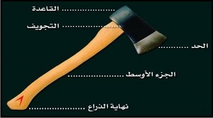
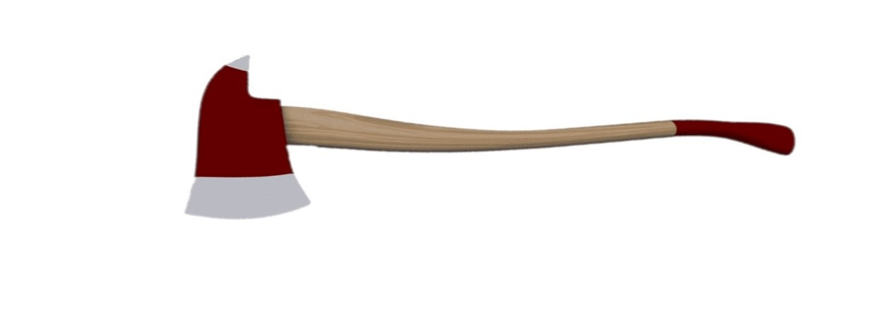
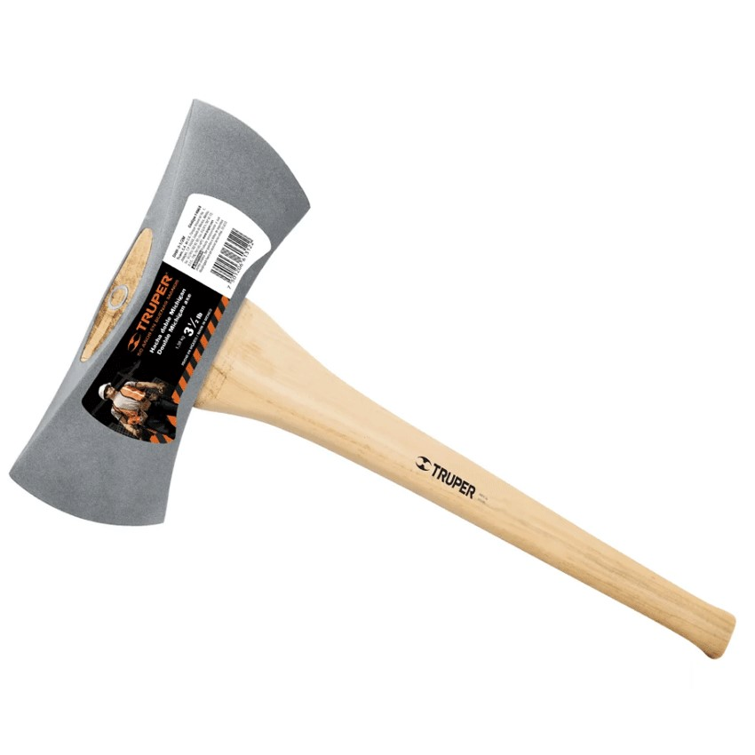
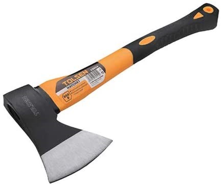

ما هي البلطة:-
تعتبر البلطة أو الفأس من أوائل الادوات التي أستخدمها الانسان الاول في الدفاع عن نفسه من أخطار الاعداء وصيد الحيوانات والطيور وتقطيع الاخشاب وقلع الاشجار إيقاد النيران وعمل الاكواخ وغير ذالك وكانت تصنع كلها من الحجر حيث تثبت قطعه من الاحجار الصلبة الحادة في قطعه من الخشب واستمر ذالك حتى اكتشف معدن البرونز فاستعمل بدلا من الاحجار ثم استعمل الحديد ثم الصلب ويستخدم الكشاف البلطة في كثير من مشروعات الريادة وأعمال الهوايات وقطع الاخشاب وغير ذالك ولهذا تعتبر البلطة أوفى صديق للكشاف وفي نفس الوقت اخطر الاعداء له ولكن الكشاف لا يستطيع الاستغناء عنها في المخيمات والرحلات فهي تقدم له الكثير من الخدمات إذا أحسن استعمالها وحافظ عليها.
اجزاء البلطة:-

الــــــــذراع: وهو مصنوع من الخشب وأحيانا من الحديد وله طرفان.
الـــرأس: الطرف العلوي ويسمى بالرأس وهو الجزء الذي يدخل في السلاح الكعب (الطرف السفلي).
الــمـقـبـــض: فله أهميه كبيرة وكلما كان المقبض طويلا كلما ساعد ذلك على قوة الضربة.
الــســـــــلاح: وهو من الصلب وينقسم إلى قسمين القسم القاعدة ويسمى ظهر السلاح القسـم الـحــاد ويسمى النصل.
التجويف: وهو الجزء الذي يدخل فيه طرف الذراع.
الـحــافـظــــة: وهي مصنوعة من الجلد وفائدتها حفظ الرأس من الافلات وحفظ طرف الذراع من التشقق.
انواع البلطة:-
بلطة المطافى:-

بلطة الامريكى:-

بلطة العادية:-
تستخدم في الرحلات قصيرة المدى و في تقطيع الحطب.

قبل أن تستخدم البلطة يجب مراعاة:-
لا يستعمل البلطة إلا الكشاف الحاصل على درجة الكشاف الثاني أو بعد إذن العريف.
عدم استعمال البلطة قبل التأكد من صالحية النصل وثبات الرأس بالمقبض .
لا تسمح لأحد أن يقف بالقرب منك اثناء العمل و ذلك لتلافى ما قد يقع من أخطار و يستحسن أن يكون 3 متر دائريا.
ركز انتباهك على العمل ولا تعتمد على قوة عضلاتك فقط بل أستغل نصل البلطة في عملية التحطيب حتى لا تجهد نفسك .
عدم استعمال البلطة في قطع الحديد او الأحجار.
أثناء استعمال البلطة يراعى الاتى :-
I. قم بالتقطيع فوق قطعة حطب كبيرة فإن ذلك يساعدك ويحميك ولمنع اصطدام البلطة بالارض .
II. البدء بقطيع الفروع الصغيرة قبل الشروع بقطع الكتلة
III. يراعى القطع بشكل مائل قليلا وأخرى إلى الاسفل , لا تقطع بشكل عمودي بل اجعل القطع بزاوية 45. لقطع الاشجار المصرح بإسقاطها اقطعها من جهتين، الاول من الجانب الذي تريد أن تسقط الشجرة فيه، والثاني من االتجاه المعاكس ويكون أعلى من الاول، مع أهمية الابتعاد من الشجرة لحظة سقوطها.
IV. ركز اهتمامك إلى مكان الضرب حتى تصيب الجزء المراد قطعه .
V. لا تدع حد البلطة يصطدم بحجر فان ذلك يؤدي إلى تطاير شظايا الحجر وتلف حد البلطة.
VI. ركز الغصن الذي ترغب في كسره على كتله خشبية ثابتة على الأرض.(اذا كنت واقفا اضغط بقدمك على نهاية الغصن و اذا كانت الكتلة التي تنوى كسرها ثابتة فافتح قدميك يمينا و شمالا حتى تبتعد بجسمك عن الخطر).
كيفية المحافظة على البلطة ؟
o لا تستعمل البلطة في كسر أو قطع الاشياء الصلبة.
o امسح البلطة ونظفها عند الانتهاء من استعمالها.
o ضع البلطة في جرابها فور الانتهاء من استعمالها. (اذا لم يكن لها جراب فأغمد سلاحها في قطعة خشب لكي تحافظ على حدها وتمنع الصدأ .)
o أسرع بأزالة كل ما يعلق بالبلطة من صدأ .
o ادهن البلطة دائما بالزيت من آن الى اخر أو بالشحم أو الدهن لكي تحافظ عليا من التلف.